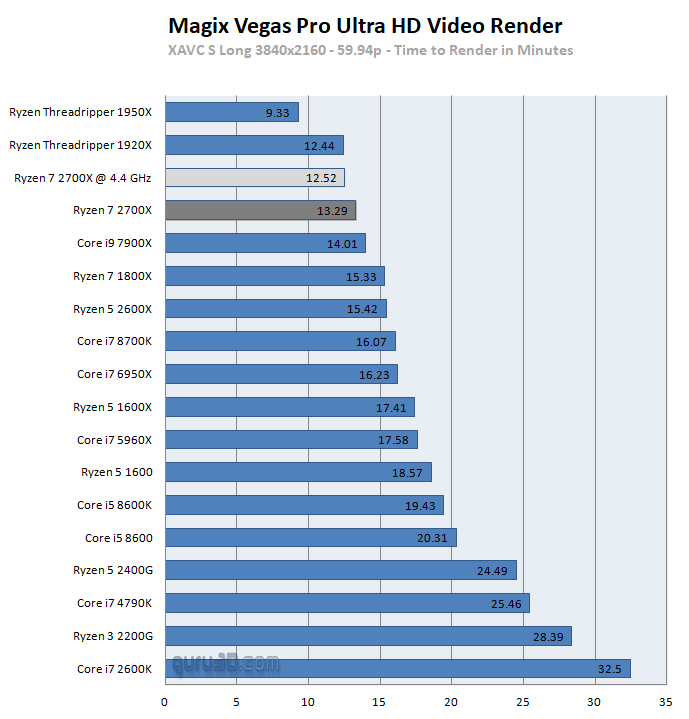

2nd Gen (2700X) Performance
Performance with MAGIX Vegas Pro

This professional video editing software Vegas Pro is a video editing software package for non-linear editing. Originally developed as an audio editor, it eventually developed into an NLE for video and audio from version 2.0. Vegas features real-time multitrack video and audio editing on unlimited tracks, resolution-independent video sequencing, complex effects and compositing tools, 24-bit/192 kHz audio support, VST and DirectX plug-in effect support, and Dolby Digital surround sound mixing. Up to version 10, Vegas Pro runs on Windows 7, Windows 8, and Windows 10 and is multi-threaded. For our benchmark session, we output towards XAVC S Long 3840x2160 - 59.94p, a very heavy encode. Video card assisted encoding is disabled. This is a real-world test, not a synthetic one and is based on our own content and preferences. We take a two-minute game recording, add an audio track. The content is created with that new audio-track mixed in there as well as applying two video fp32 enhancement filters for contrast and sharpening.
← Back